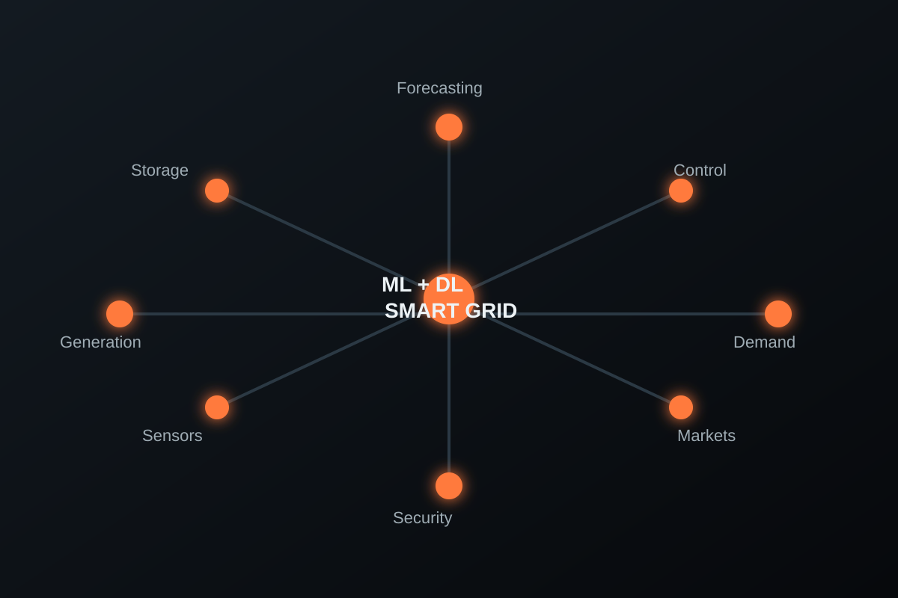

Journal Article · Review
Transformation and Future Trends of Smart Grid Using Machine and Deep Learning: A State-of-the-Art Review
The paper reviews smart-grid architecture and the use of machine learning and deep learning for forecasting, security, stability, reliability and system operation. It also identifies implementation limits and future research directions.
VenueInternational Journal of Applied Power Engineering, 13(3), 583-593
AffiliationDepartment of Electrical and Electronic Engineering, BRAC University
RoleCo-author